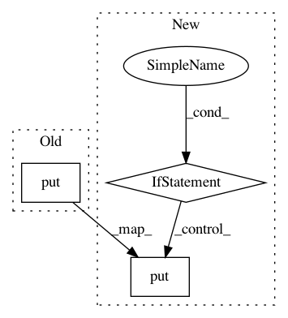

46c595168cabd5ce99981748204c53de4ffe0261,src/gluonnlp/data/stream.py,_Prefetcher,__next__,#_Prefetcher#,233
Before Change
def __next__(self):
next_item = self.data_queue.get()
if next_item is None:
self.control_queue.put(None)
raise StopIteration
return next_item
def next(self):
After Change
// the error queue
next_error = self._errorq.get(block=False)
if next_error is None:
return next_item
else:
self._controlq.put(None)
if next_error[0] is StopIteration:
raise StopIteration
else:
return self._reraise(*next_error)
def _reraise(self, e, tb):
print("Reraising exception from Prefetcher")
print(tb)
raise e
In pattern: SUPERPATTERN
Frequency: 3
Non-data size: 3
Instances
Project Name: dmlc/gluon-nlp
Commit Name: 46c595168cabd5ce99981748204c53de4ffe0261
Time: 2018-11-19
Author: leonard@lausen.nl
File Name: src/gluonnlp/data/stream.py
Class Name: _Prefetcher
Method Name: __next__
Project Name: microsoft/nni
Commit Name: 04c30254d4bd16b07958110165f59e9ac9fbf5c6
Time: 2019-07-16
Author: 38930155+chicm-ms@users.noreply.github.com
File Name: tools/nni_trial_tool/log_utils.py
Class Name: PipeLogReader
Method Name: run
Project Name: tensorlayer/tensorlayer
Commit Name: 5f341caf872423529bc65d5257691a484d934c3d
Time: 2019-04-04
Author: ivbensekin@gmail.com
File Name: tensorlayer/models/core.py
Class Name: Model
Method Name: _construct_graph